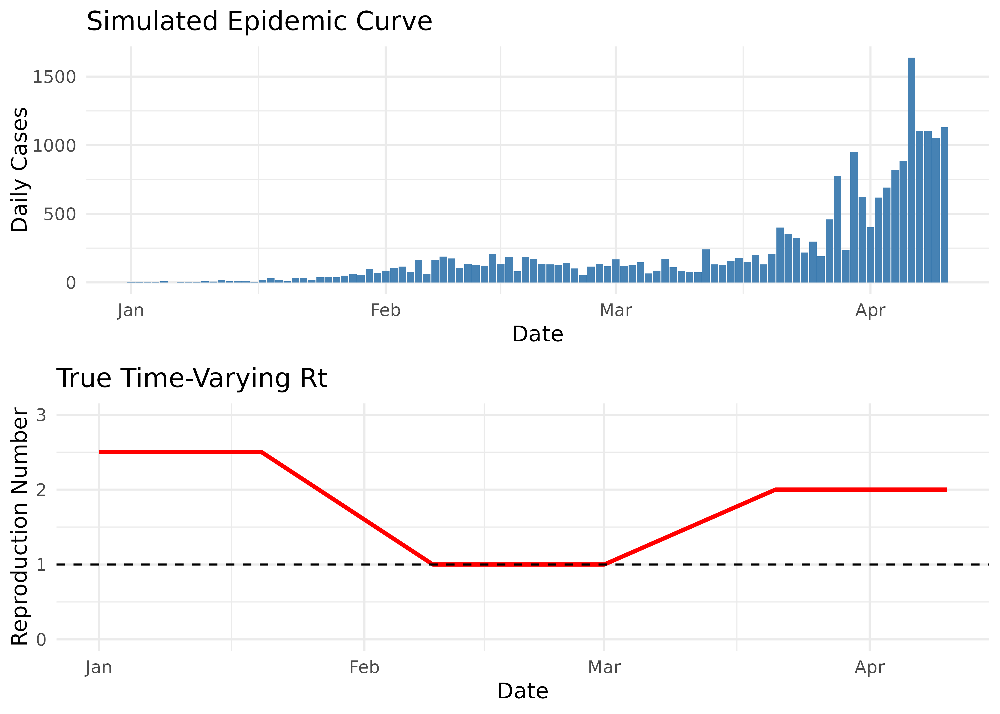
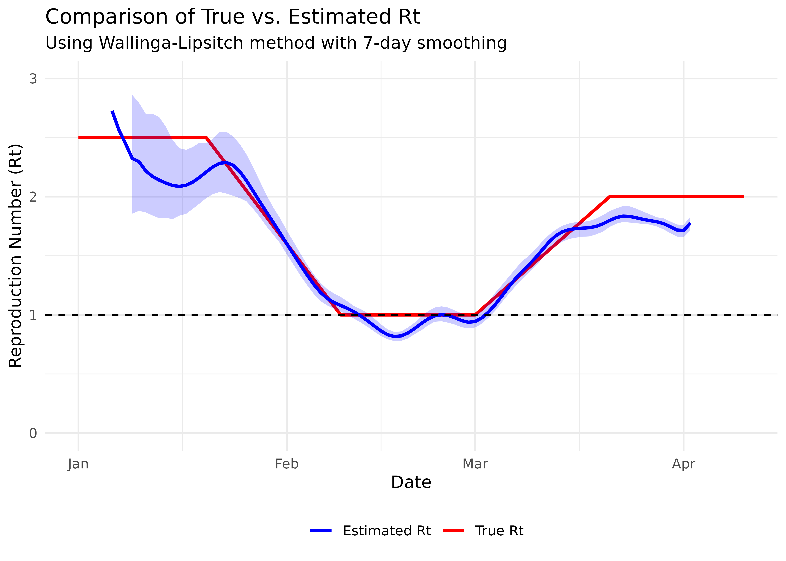

Quick Start Guide: Estimating Epidemiological Parameters with `mitey`
Kylie Ainslie
2025-09-10
Source:vignettes/quick_start_guide.Rmd
quick_start_guide.RmdIntroduction
This vignette demonstrates how to use the mitey package
to estimate two key epidemiological parameters:
- Serial interval: The time between symptom onset in an infector and symptom onset in an infectee
- Time-varying reproduction number (Rt): The average number of secondary cases generated by each infected individual at time t
Understanding these parameters is crucial for characterizing disease transmission dynamics, evaluating intervention effectiveness, and designing control strategies. They provide the foundation for mathematical models that inform public health decision-making.
We’ll use both simulated and real-world examples for each parameter, with a focus on scabies (a skin infestation caused by the mite Sarcoptes scabiei) for the real-world applications.
Estimating the Serial Interval
The serial interval distribution is crucial for understanding disease
transmission dynamics. The mitey package implements the
method developed by Vink et al. (2014)1 to estimate the mean and standard
deviation of the serial interval from outbreak data. Accurate serial
interval estimates are essential because they directly inform how we
interpret the spread of disease over time and are key inputs for
estimating the reproduction number.
Simulated Data Example
First, let’s generate simulated data with a known serial interval distribution to validate our method. We’ll create Index Case-to-Case (ICC) intervals, which represent the time in days between symptom onset in the first identified case (index case) and symptom onset in subsequent cases:
set.seed(1234)
# Parameters for simulation
N <- 500 # Number of observations
true_mean <- 15 # True mean serial interval (days)
true_sd <- 3 # True standard deviation (days)
route_weights <- c(0.2, 0.5, 0.2, 0.1) # Weights for transmission routes
# Generate data for different transmission routes
CP <- fdrtool::rhalfnorm((route_weights[1]*N), theta=sqrt(pi/2)/(sqrt(2)*true_sd)) # Co-Primary
PS <- rnorm(route_weights[2]*N, mean=true_mean, sd=true_sd) # Primary-Secondary
PT <- rnorm(route_weights[3]*N, mean=2*true_mean, sd=sqrt(2)*true_sd) # Primary-Tertiary
PQ <- rnorm(route_weights[4]*N, mean=3*true_mean, sd=sqrt(3)*true_sd) # Primary-Quaternary
# Combine and round to days
sim_icc_intervals <- round(c(CP, PS, PT, PQ))
# Visualize the simulated data
hist(sim_icc_intervals,
breaks = seq(min(sim_icc_intervals)-0.5, max(sim_icc_intervals)+0.5, by=1),
main = "Simulated ICC Intervals",
xlab = "Days since index case onset",
col = "lightblue")
In this simulation, we generate different types of transmission routes:
- Co-Primary (CP): Cases infected by the same source around the same time
- Primary-Secondary (PS): Direct transmission from index case to secondary cases
- Primary-Tertiary (PT): Unobserved secondary case between two cases
- Primary-Quaternary (PQ): Unobserved secondary and tertiary cases between two cases
Now, let’s estimate the serial interval using the
si_estim() function:
# Estimate serial interval assuming Normal distribution
si_results <- si_estim(sim_icc_intervals, dist = "normal")
si_results
#> $mean
#> [1] 15.27227
#>
#> $sd
#> [1] 2.668236
#>
#> $wts
#> [1] 2.069240e-01 4.928008e-01 7.268046e-10 2.006243e-01 4.020051e-17
#> [6] 9.965094e-02 2.539582e-24#> True parameters:
#> Mean: 15 days
#> SD: 3 days
#> Estimated parameters:
#> Mean: 15.27 days
#> SD: 2.67 daysThe si_estim() function uses a mixture model to
distinguish between different transmission routes. The output
includes:
-
mean: Estimated mean serial interval (days) -
sd: Estimated standard deviation (days) -
wts: Weights for each transmission component in the mixture model
The choice between normal and gamma distributions for the serial interval depends on the disease characteristics. Normal distributions can accommodate negative serial intervals (which can occur when an infectee shows symptoms before their infector), while gamma distributions are strictly positive and often better suited for diseases with minimal pre-symptomatic transmission.
Let’s visualize how well our estimated distribution fits the data:
# Extract weights
weights <- c(si_results$wts[1],
si_results$wts[2] + si_results$wts[3],
si_results$wts[4] + si_results$wts[5],
si_results$wts[6] + si_results$wts[7])
# Plot the fitted distribution
plot_si_fit(
dat = sim_icc_intervals,
mean = si_results$mean[1],
sd = si_results$sd[1],
weights = weights,
dist = "normal"
) +
ggtitle("Fitted Serial Interval Distribution (Simulated Data)") +
theme(plot.title = element_text(hjust = 0.5))The red curve shows the fitted mixture density, with the dashed vertical line indicating the estimated mean serial interval. Our estimation accurately recovers the true parameters from the simulated data.
Real Data Example: Scabies Outbreaks
Now, let’s analyze real data from scabies outbreaks. We’ll use data from multiple studies published in the literature:
# Load scabies ICC interval data
file_path <- here("vignettes", "data", "si_data.rds")
scabies_si_data <- readRDS(file_path)Scabies has an unusually long serial interval compared to many other infectious diseases due to its biology and transmission dynamics. The mite requires time to establish on a new host, reproduce, and build up sufficient numbers to cause symptoms and become transmissible. This contrasts sharply with respiratory viruses like influenza, which typically have serial intervals of only 2-4 days.
We’ll use si_estim() to estimate the serial interval for
each study:
# Estimate serial interval for each study
result_by_study <- scabies_si_data %>%
group_by(study) %>%
summarise(result = list(si_estim(icc_interval))) %>%
mutate(
mean = map_dbl(result, "mean"),
sd = map_dbl(result, "sd"),
wts = map(result, "wts")
) %>%
select(-result)
# Display results
result_by_study %>%
select(study, mean, sd) %>%
mutate(across(c(mean, sd), round, 2)) %>%
arrange(mean) %>%
knitr::kable(caption = "Estimated mean and standard deviation of serial interval (days) by study")| study | mean | sd |
|---|---|---|
| Ariza et al. | 98.40 | 8.54 |
| Tjon-Kon-Fat et al | 110.72 | 16.14 |
| Akunzirwe et al. | 122.92 | 26.92 |
| Kaburi et al. | 167.34 | 9.72 |
The notable variation in estimated serial intervals between studies (ranging from 98 to 167 days) likely reflects differences in study populations, settings (schools vs. nursing homes), and data collection methods. This heterogeneity underscores the importance of context-specific estimates for epidemiological modeling.
Let’s process the results for visualization:
# Process weights for plotting
result_wide <- result_by_study %>%
unnest(wts) %>%
pivot_longer(
cols = c(mean, sd, wts),
names_to = "statistic",
values_to = "value"
) %>%
group_by(study, statistic) %>%
mutate(
occurrence = row_number(),
statistic = if_else(statistic == "wts", paste0("weight_", occurrence), statistic)
) %>%
filter(statistic != "mean" | occurrence == 1) %>%
filter(statistic != "sd" | occurrence == 1) %>%
select(-occurrence) %>%
ungroup() %>%
pivot_wider(
names_from = statistic,
values_from = value
)
# Merge with original data for plotting
df_merged <- scabies_si_data %>%
left_join(result_wide, by = "study", relationship = "many-to-many")Let’s visualize the fitted serial interval distribution for each study:
# Create a function to generate plot for each study
plot_study <- function(study_data) {
study_name <- unique(study_data$study)
plot_si_fit(
dat = study_data$icc_interval,
mean = study_data$mean[1],
sd = study_data$sd[1],
weights = c(study_data$weight_1[1],
study_data$weight_2[1] + study_data$weight_3[1],
study_data$weight_4[1] + study_data$weight_5[1],
study_data$weight_6[1] + study_data$weight_7[1]),
dist = "normal",
scaling_factor = 0.25
) +
ggtitle(study_name) +
theme(plot.title = element_text(hjust = 0.5, size = 11))
}
# Generate plots for each study
study_plots <- df_merged %>%
group_by(study) %>%
group_split() %>%
map(plot_study)
# Combine plots
combined_plot <- plot_grid(
plotlist = study_plots,
labels = "AUTO",
ncol = 2
)
# Display combined plot
combined_plotThese plots show considerable variation in estimated serial intervals between studies (ranging from ~98 days to ~167 days). The differences may be due to variations in study settings, population characteristics, and data collection methods.
Estimating Time-Varying Reproduction Number (Rt)
Introduction
The time-varying reproduction number (Rt) is a key parameter in
infectious disease epidemiology that quantifies how transmission
potential changes over time. The mitey package implements
the Wallinga-Lipsitch method for estimating Rt from time series of case
counts. This vignette demonstrates how to use the
wallinga_lipsitch() function with both simulated and real
data.
Method details
The Wallinga-Lipsitch method2 establishes a relationship between the growth rate of an epidemic and the reproduction number. This approach:
- Uses the serial interval distribution to connect observed cases over time
- Calculates relative likelihoods of transmission between cases
- Adjusts for right-truncation (recent cases that haven’t had time to infect others)
- Produces estimates of the case reproduction number (Rt)
The wallinga_lipsitch() function in mitey
takes the following parameters:
wallinga_lipsitch(
incidence, # Vector of case counts
dates, # Vector of dates corresponding to incidence
si_mean, # Mean of serial interval distribution (days)
si_sd, # Standard deviation of serial interval
si_dist = "gamma", # Distribution type ("gamma" or "normal")
smoothing = 0, # Window size for smoothing (0 for no smoothing)
bootstrap = FALSE, # Whether to compute bootstrap CIs
n_bootstrap = 1000, # Number of bootstrap samples
conf_level = 0.95, # Confidence level for intervals
shift = FALSE # Whether to shift estimates by one serial interval
)Simulated Data Example
Let’s generate epidemic data with a known time-varying reproduction number to validate our implementation:
set.seed(42)
# Simulation parameters
t_end <- 100 # Simulation duration (days)
si_mean <- 7 # Mean serial interval (days)
si_sd <- 2 # SD of serial interval (days)
# Define a time-varying reproduction number function
# This creates a pattern where Rt starts high, decreases below 1, then increases again
true_rt <- function(t) {
if(t < 20) return(2.5) # Initial high Rt
if(t < 40) return(2.5 - 0.075 * (t - 20)) # Linear decrease
if(t < 60) return(1.0) # Stable period at Rt=1
if(t < 80) return(1.0 + 0.05 * (t - 60)) # Linear increase
return(2.0) # Final high Rt
}
# Create vector of true Rt values for plotting
true_rt_values <- sapply(1:t_end, true_rt)
# Initialize with some seed cases
cases <- numeric(t_end)
cases[1:5] <- c(1, 2, 3, 5, 8)
# Serial interval distribution (discretized normal)
si_pmf <- dnorm(0:30, mean = si_mean, sd = si_sd)
si_pmf <- si_pmf / sum(si_pmf) # Normalize to sum to 1
# Generate incidence using renewal equation model
for(t in 6:t_end) {
# Calculate expected new cases
lambda <- 0
for(s in 1:min(t-1, length(si_pmf))) {
lambda <- lambda + cases[t-s] * true_rt(t-s) * si_pmf[s]
}
# Add randomness (negative binomial distribution)
cases[t] <- rnbinom(1, mu = lambda, size = 10)
}
# Create dates sequence
sim_dates <- seq.Date(as.Date("2023-01-01"), by = "day", length.out = t_end)
# Create data frame
sim_epidemic <- data.frame(
date = sim_dates,
cases = cases,
true_rt = true_rt_values
)
# Plot the simulated epidemic curve with true Rt
p1 <- ggplot(sim_epidemic, aes(x = date, y = cases)) +
geom_col(fill = "steelblue") +
labs(
x = "Date",
y = "Daily Cases",
title = "Simulated Epidemic Curve"
) +
theme_minimal()
p2 <- ggplot(sim_epidemic, aes(x = date, y = true_rt)) +
geom_line(color = "red", linewidth = 1) +
geom_hline(yintercept = 1, linetype = "dashed", color = "black") +
labs(
x = "Date",
y = "Reproduction Number",
title = "True Time-Varying Rt"
) +
ylim(0, 3) +
theme_minimal()
# Combine plots
plot_grid(p1, p2, ncol = 1)
Note that the epidemic curve directly reflects changes in the reproduction number:
- When Rt > 1 (days 1-50, then after day 80), the epidemic grows
- When Rt = 1 (around days 50-60), the epidemic plateaus
- When Rt < 1 (days 60-80), the epidemic declines
Now, let’s estimate Rt using the wallinga_lipsitch()
function:
# Estimate Rt using wallinga_lipsitch
rt_estimates <- wallinga_lipsitch(
incidence = sim_epidemic$cases,
dates = sim_epidemic$date,
si_mean = si_mean,
si_sd = si_sd,
si_dist = "normal",
smoothing = 7, # 7-day smoothing window
bootstrap = TRUE,
n_bootstrap = 100 # Use more in practice
)
# Convert to data frame for plotting
rt_est_df <- as.data.frame(rt_estimates)
# Compare estimated vs true Rt
ggplot() +
# True Rt
geom_line(
data = sim_epidemic,
aes(x = date, y = true_rt, color = "True Rt"),
linewidth = 1
) +
# Estimated Rt (with right-truncation correction)
geom_line(
data = rt_est_df,
aes(x = date, y = R_corrected, color = "Estimated Rt"),
linewidth = 1
) +
# Confidence intervals
geom_ribbon(
data = rt_est_df,
aes(x = date, ymin = R_corrected_lower, ymax = R_corrected_upper),
fill = "blue", alpha = 0.2
) +
# R=1 threshold
geom_hline(yintercept = 1, linetype = "dashed", color = "black") +
# Styling
scale_color_manual(
values = c("True Rt" = "red", "Estimated Rt" = "blue"),
name = ""
) +
labs(
x = "Date",
y = "Reproduction Number (Rt)",
title = "Comparison of True vs. Estimated Rt",
subtitle = "Using Wallinga-Lipsitch method with 7-day smoothing"
) +
ylim(0, 3) +
theme_minimal() +
theme(legend.position = "bottom")
Note that the estimated Rt (blue line) seems to lag behind the true Rt (red line). This is expected because the case reproduction number we’re estimating is based on when cases are observed, while the instantaneous reproduction number (our true Rt) represents current transmission potential. The choice of smoothing window is important - too small and the estimates will be noisy, too large and they may miss important changes in transmission dynamics.
Understanding the ‘shift’ Parameter
The wallinga_lipsitch() function includes a
shift parameter that can help align case reproduction
number estimates with instantaneous reproduction number estimates. When
set to TRUE, this parameter shifts Rt estimates forward by
one mean serial interval to better match the timing of changes in
transmission:
# Re-estimate with shift=TRUE
rt_shifted <- wallinga_lipsitch(
incidence = sim_epidemic$cases,
dates = sim_epidemic$date,
si_mean = si_mean,
si_sd = si_sd,
si_dist = "normal",
smoothing = 7,
bootstrap = FALSE, # Skip bootstrap for speed
shift = TRUE # Use shift parameter
)
# Compare true Rt with both original and shifted estimates
ggplot() +
# True Rt
geom_line(
data = sim_epidemic,
aes(x = date, y = true_rt, color = "True Rt"),
linewidth = 1
) +
# Original estimated Rt
geom_line(
data = rt_est_df,
aes(x = date, y = R_corrected, color = "Estimated Rt (original)"),
linewidth = 1
) +
# Shifted estimated Rt
geom_line(
data = as.data.frame(rt_shifted),
aes(x = shifted_date, y = R_corrected, color = "Estimated Rt (shifted)"),
linewidth = 1
) +
# R=1 threshold
geom_hline(yintercept = 1, linetype = "dashed", color = "black") +
# Styling
scale_color_manual(
values = c("True Rt" = "red",
"Estimated Rt (original)" = "blue",
"Estimated Rt (shifted)" = "green"),
name = ""
) +
labs(
x = "Date",
y = "Reproduction Number (Rt)",
title = "Effect of the 'shift' parameter on Rt estimates",
subtitle = "Shifting forward by one serial interval (7 days)"
) +
ylim(0, 3) +
theme_minimal() +
theme(legend.position = "bottom")The shifted estimates align better with the true Rt values. The shift parameter moves estimates forward by one mean serial interval, which helps address the inherent lag in case-based Rt estimation.
Real Data Example
Zika outbreak in Giradot, Colombia (2015)
To illustrate how to apply the Wallinga-Lipsitch method to real data,
we’ll use data on daily incidence of Zika virus disease in Giradot,
Colombia from October 2015 to January 2016. The data is available from
the outbreaks package3.
The Zika epidemic in Colombia was part of a larger outbreak across the Americas in 2015-2016. Zika virus is primarily transmitted by Aedes mosquitoes, and the outbreak in Colombia was notable for its rapid spread and the associated health impacts, including an increase in cases of microcephaly in newborns and Guillain-Barré syndrome4.
data(zika_girardot_2015)
# Examine the data structure
str(zika_girardot_2015)
#> 'data.frame': 93 obs. of 2 variables:
#> $ date : Date, format: "2015-10-19" "2015-10-22" ...
#> $ cases: int 1 2 1 4 2 5 2 4 5 4 ...Let’s have a look at the epidemic curve.

Now we’ll estimate the reproduction number using the
wallinga_lipsitch() function we created. For Zika virus,
we’ll use a mean serial interval of 7 days with a standard deviation of
1.5 days, based on literature estimates for mosquito-borne diseases:
# Parameters for Zika
zika_si_mean <- 7 # days
zika_si_sd <- 1.5 # days
# Estimate Rt using the Wallinga-Lipsitch method
rt_zika <- wallinga_lipsitch(
incidence = zika_girardot_2015$cases,
dates = zika_girardot_2015$date,
si_mean = zika_si_mean,
si_sd = zika_si_sd,
si_dist = "gamma",
smoothing = 0,
bootstrap = TRUE,
n_bootstrap = 100,
conf_level = 0.95
)
head(rt_zika)
#> date incidence R R_corrected R_lower R_upper
#> 1 2015-10-19 1 14.581278 NA 4.902768 20.361782
#> 2 2015-10-22 2 3.878647 3.878647 1.765327 20.228407
#> 3 2015-10-23 1 3.045381 3.045381 1.611395 12.277686
#> 4 2015-10-24 4 2.728295 2.728295 1.587628 5.251488
#> 5 2015-10-25 2 2.876025 2.876025 1.846027 5.279635
#> 6 2015-10-26 5 3.374939 3.374939 2.365928 6.187512
#> R_corrected_lower R_corrected_upper
#> 1 4.144712 9.421278
#> 2 1.740119 9.037280
#> 3 1.607320 7.723497
#> 4 1.587628 5.251488
#> 5 1.846027 5.279635
#> 6 2.365928 6.187512Now let’s visualise the reproduction number estimates.
# Prepare data for visualization
rt_plot_data <- rt_zika %>%
filter(!is.na(R_corrected)) %>%
# Skip the first 7 days of unstable estimates
filter(date > min(date) + 7)
# Plot Rt over time
rt_plot <- ggplot(rt_plot_data, aes(x = date)) +
geom_ribbon(aes(ymin = R_corrected_lower, ymax = R_corrected_upper),
fill = "#21908C", alpha = 0.2) +
geom_line(aes(y = R_corrected), color = "#21908C", size = 1) +
geom_hline(yintercept = 1, linetype = "dashed", color = "black") +
#coord_cartesian(ylim = c(0, 3)) +
scale_x_date(date_breaks = "14 days", date_labels = "%d-%m-%Y") +
labs(
x = "Time",
y = "Reproduction number (Rt)",
title = "Estimated reproduction number for Zika in Girardot, Colombia",
subtitle = paste0("Serial interval: ", zika_si_mean, " days (SD: ", zika_si_sd, " days)")
) +
theme_minimal() +
theme(axis.text.x = element_text(angle = 45, hjust = 1))
# Show Rt plot with epicurve
plot_grid(zika_epicurve, rt_plot, ncol = 1, rel_heights = c(1, 1.5))The reproduction number plot tells an important epidemiological story:
- Initially, Rt was well above 1, indicating rapid epidemic growth
- Around November-December, Rt crosses below 1, suggesting that control measures or other factors were beginning to reduce transmission
- By January, Rt remains below 1, suggesting the epidemic was being controlled
This analysis demonstrates how Rt estimation can provide valuable insights for evaluating the effectiveness of interventions and predicting the future course of an epidemic.